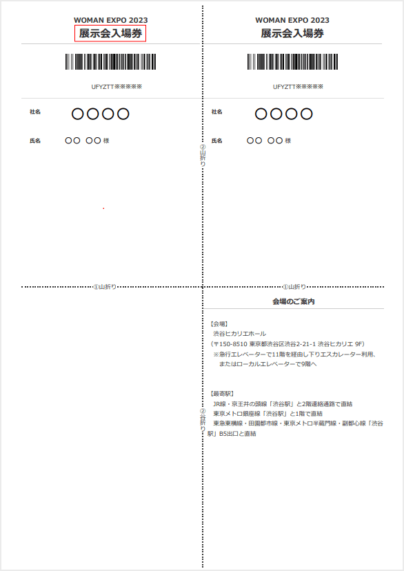
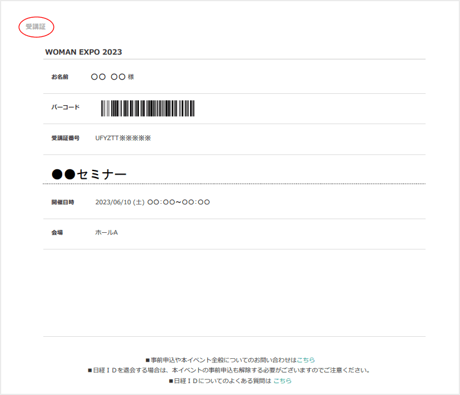

お問い合わせ
お問い合わせの前に、本ページ内の「よくあるご質問（FAQ）」をご参照ください。
「よくあるご質問（FAQ）」で解決しなかった場合は、お手数ですが下記ボタン（イベントお問い合わせフォーム）よりお問い合わせください。
お問い合わせはこちら
- ※ご回答できるのは、土・日・祝日を除く、9:00～17:00となります。
- ※6月10日（土）、11日（日）については、ご回答ができません。
報道関係の皆様からのお問い合わせ
WOMAN EXPO 広報事務局（キョードーメディアス内）
担当：山内、佐藤、雲林院
Eメール：medias.yamauchi@kyodotokyo.com
出展社の皆様からのお問い合わせ
WOMAN EXPO 事務局（下記メールアドレス）にメールにてお寄せください。
Eメール：w-expo@nikkeibp.co.jp
よくあるご質問（FAQ）
リアル開催への参加・入場について
- WOMAN EXPO 2023リアル開催への参加方法を教えてください。
-
本イベントのリアル開催への参加は、公式サイトからの事前登録制（無料）となります。セミナーのリアル会場聴講をご希望の方は、公式サイトの「セミナー申込」ページから、希望セミナーの会場聴講の事前申込をお願いします。（セミナーの一覧はこちら）。セミナーを聴講になる方は展示ブース会場も自由にご覧いただけます。
展示ブース会場のみご覧になる方（セミナーに参加されない方）は、こちらから、展示会の事前申込をお願いします。
当日は、セミナーにご参加の方も、展示ブース会場のみをご覧になる方も、「展示会入場券」をプリントアウト（下参照）のうえ、渋谷ヒカリエホールのエントランスに設置する受付にお越しください 受付にて、プリントアウトと引き換えに来場者バッジをお渡しします。
 「展示会入場券」 プリントアウトができない方は、スマートフォン等で「展示会入場券」の画面をご提示いただければ受付ができます。（「展示会入場券」の表示・プリントアウトはこちら。
- セミナーの参加方法について教えてください
-
本イベントのセミナー参加は事前申込制です。セミナーのリアル会場聴講をご希望の方は、公式サイトの「セミナー申込」ぺージから、希望セミナーの事前申込をお願いします。（セミナーの一覧はこちら）。セミナーを聴講になる方は展示ブース会場も自由にご覧いただけます。
セミナーは複数選ぶことができますが、開催時間が重なる場合は、いずれか1つしかお申し込みいただけません。会期に向けて、新たなプログラムを順次公開していきます。
当日、セミナーに参加する際は、各セミナー会場の入口にて「受講証」（下）をご提示ください。プリントアウトができない方は、スマートフォン等で「受講証」の画面をご提示いただければ、受付ができます。（「受講証」の表示・プリントアウトはこちら）。
 「受講証」 - 日経ID取得について教えてください。
-
本イベントの事前申込をする際に、日経グループのさまざまなインターネットサービスが受けられる「日経ID」が必要になります。日経IDをお持ちでない方は、事前申込画面の案内に従って、日経IDを取得のうえWOMAN EXPOの事前申込をお願いいたします。
なお、日経IDをお持ちの方で、パスワードが分からない場合は、こちらより、登録いただいているe-mailアドレス、氏名（姓・名）、生年月日を入力してください。 - リアル開催事前申込の完了メールが届きません。
-
お申し込み後に、事前申込完了メールが届かない場合は、下記の可能性が考えられますので、ご確認ください。
- 登録したe-mailアドレスに間違いがある場合
申込フォームに入力したe-mailアドレスに間違いがあった場合は、申込完了メールが届きません。
お手数ですが、ご登録いただいたe-mailアドレスに間違いがないかご確認をお願いいたします。 - メールの受信設定による場合
- お使いのメールソフトやウイルス対策ソフトの設定によっては、自動的にメールが迷惑メールフォルダに入っていたり、受信拒否や削除をしている場合があります。登録完了メール（「event-sc@nikkeibp.co.jp」からのメール）を受信できるようメールの振り分け設定を事前にお願いいたします。
- お使いのメールボックスの容量が制限を超えていると、新しいメールを受け付けないケースがございます。サーバのメールを削除いただきますと、受信可能となります。
- その他
ブラウザ・ネットワークの設定や不具合なども考えられます。お使いのサーバが停止している場合や、ウイルス対策ソフトが停止している場合は、メールが受信できない可能性があります。ご契約のプロバイダ、パソコンメーカー、セキュリティソフトメーカーなどにお問い合わせください。
- 登録したe-mailアドレスに間違いがある場合
- 事前申込がなくても、当日、参加できますか？
- 会期当日も、公式サイトにて事前登録が可能です。「日経ID取得」と、「セミナー申込」または「展示会事前登録」をご自身のPCやスマートフォンで当日完了された方は参加いただけます。お早めの事前申込をお勧めいたします。
- 事前申込はいつまで可能ですか？
- 各セミナーの事前申込は6月10日（土）の各セミナー開始時刻まで、展示会事前登録は閉場時刻まで可能です。ただし、受付数に限りがあります。上限に達している場合は申込受付ができません。
- 事前申込をしたセミナーの確認やキャンセルをするには、どうすれば良いですか？
- 「MyPage」で、申し込みセッションの確認やキャンセルができます。
- セミナー参加の追加申込は可能ですか？
-
こちらより追加申込が可能です。新たに決定したセミナーは順次公開します。追加申込を希望する場合は、新たに申し込みをしたいセミナーにチェックを入れ、申し込み手続きに進んでください。
ただし、時間帯の重複しているセミナーには新たに申し込みができません。片方をキャンセルすると申し込みができます。
イベント当日のご案内（リアル開催）
- イベント当日は、何を持っていけばいいですか？
-
展示会場のみご覧になる方
「展示会入場券」（下）のプリントアウトをご持参ください。
プリントアウトができない方は、受付にて、スマートフォン等で「展示会入場券」の画面をご提示いただきます。受付の前に、スマートフォン等の画面をご準備ください。（「展示会入場券」の表示・プリントアウトはこちら）。
「展示会入場券」 セミナーに参加される方
WOMAN EXPOの受付で必要になる「展示会入場券」（上）のプリントアウトと、参加されるすべてのセミナーの「受講証」（下）のプリントアウトをご持参ください。
「展示会入場券」と「受講証」は、別々にプリントアウトをお願いいたします。
（裏表に印刷をしないようお願いいたします）プリントアウトができない方は、スマートフォン等で「展示会入場券」および「受講証」の画面をご提示いただきます。受付およびセミナー会場入場の前に、スマートフォン等の画面をご準備ください。
（「展示会入場券」「受講証」の表示・プリントアウトはこちら）。「受講証」 - 「受講証」について教えてください
-
「受講証」の表示・プリントアウトはこちらから可能です。
プリントアウトができない方は、スマートフォン等で「受講証」の画面をご提示いただければ受付ができます。
なお、ご友人などと一緒にお越しになる場合も、お申し込みは来場者お一人ずつ行ってください。保護者同伴の小学生以下のお子様は事前申込不要です。 - イベント当日の注意事項はありますか？
-
- A-1.「ご来場の皆様へ」に記している「感染症対策について」へのご協力をお願いします。
- A-2.会場内の展示ブースでサンプル等を配布している場合、受け取れるのは、各ブースにつき、お一人様1回に限らせていただきます。
- A-3.会場内では主催者、マスコミ各社等による取材・撮影、および事務局による記録撮影が行われ、来場者の姿がテレビ・新聞・WEB・SNS等に掲載される可能性があります。あらかじめご了承ください。
- 会場内での録音・動画撮影は固くお断りいたします。
- 展示ブース会場内およびロビーでは、基本的にスマートフォン等による撮影が可能です。ほかのお客様のご迷惑になる可能性がありますので、一眼レフカメラ、望遠レンズ、脚立、三脚、一脚、自撮棒などの機材を使用した撮影はご遠慮ください。
撮影禁止のブース、エリアについては、その旨を掲示いたします。 - セミナーの写真撮影は、開演前のアナウンスで「撮影可能」とご案内するプログラムのみに限らせていただきます。また、撮影可能なセミナーにつきましても、スクリーンにフォーカスした撮影が不可なほか、一部、制限をもうけさせていただく場合がありますことをご了承ください。
撮影は、ほかのお客様のご迷惑にならないよう、自席にてお願いするとともに、iPadやAndroidなどのタブレットによる撮影、フラッシュ撮影、一眼レフカメラ、望遠レンズ、脚立、三脚、一脚等の機材を使用した撮影はご遠慮ください。 - 撮影は、係員やアナウンスの指示に従い、ほかのお客様のご迷惑にならないようお願いいたします。指示に従っていただけない場合や、ほかの方にご迷惑をかけるような行為が見受けられた場合、撮影を禁止とさせていただく場合がございます。
- 撮影された写真にほかの方が写り込んでいる場合、その写真の公表にあたって、写り込んだ方の肖像権に触れる場合がございます。SNS等で公開する際は、写り込んでいる方の許諾をとるか、個人が特定できないように処理をお願いいたします。不適切な写真が公開されていた場合、削除要請をする場合がありますことを、あらかじめご了承ください。
- 撮影された写真のインターネット掲載については、ご自身のブログ・SNSなど個人でご利用いただく非営利目的のみとさせていただきます。営利目的でのご利用はできませんのでご注意ください。
同伴者や子どもの入場について
- 同伴者や子どもの分も一緒に申し込みできますか？
- 基本的にお一人ずつ事前申込をお願いいたします。ただし、小学生以下のお子様は、保護者同伴であれば、事前申込なしに入場いただけます。なお、出展ブースによっては、お子様に無料配布物をお渡しできない場合がございます。
- 子どもも一緒に参加することはできますか？
- 小学生以下のお子様は、保護者同伴であれば、ご参加いただけます。ただし、満席の場合、お子様を膝上に座らせていただくお願いをする可能性がございますことをご了承ください。
- ベビーカーでの入場はできますか？
- ホワイエ（ロビー等）は可能ですが、会場内はベビーカーの持ち込みはご遠慮いただいております。セミナー会場内も、基本、ご遠慮いただいていますが、席に余裕がある場合は、スタッフにご相談ください。
- 会場内に託児所はありますか？
- 会場内に託児所のご用意がありません。近隣の施設などをご利用くださいますようお願いいたします。
車椅子やお身体が不自由な方のご来場について
- 車椅子や身体が不自由でも入場できますか？
- 車椅子の方やお身体が不自由な方もご入場いただけます。セミナー会場には、介添者1名を含みご利用いただける優先スペースをご用意します（介添者も事前申込をお願いいたします）。当日は、スタッフがご案内いたしますので、お声がけください。ただ、会場内では十分なご注意のもと、ご参加をお願いいたします。
セミナーのアーカイブ配信の視聴について
- セミナーのアーカイブ配信の視聴方法を教えてください。
- セミナー（一部のセミナーを除く）のアーカイブ配信については、6月12日（月）午後から6月25日（日）まで視聴可能となる予定です（ライブ配信はありませんのでご注意ください）。公式サイトの「セミナー」ページにプログラムの一覧を公開しています。視聴希望セミナーの「セミナー視聴」をクリックするとYouTubeでご覧いただけます（事前申込は不要です）。
- セミナーのアーカイブ配信を視聴するための推奨環境を教えてください。
-
PC、スマートフォン、タブレットなどのブラウザでご覧いただくことができます。快適にご利用頂くためには以下ブラウザでの閲覧を推奨致します。推奨環境以外からのご利用の場合、サイトが正しく表示されない場合がございますので、あらかじめご了承下さい。
- PC：Google Chrome、Microsoft Edgeの最新バージョン
- スマートフォンからご利用の方：Android/iOS搭載のスマートフォン標準ブラウザ
- ※ブラウザのバージョン確認方法・アップデート方法に関しましては、各ブラウザの配布元までお問い合わせ下さい。
- ※オンライン参加にあたり、パソコン閲覧環境やインターネット通信接続などにかかる費用や設定作業は、ご自身の負担と責任でお願いいたします。